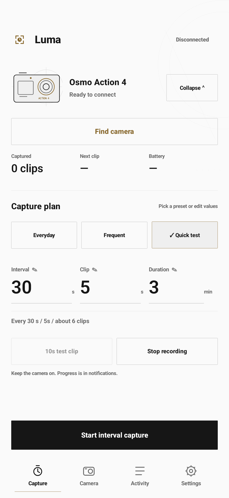
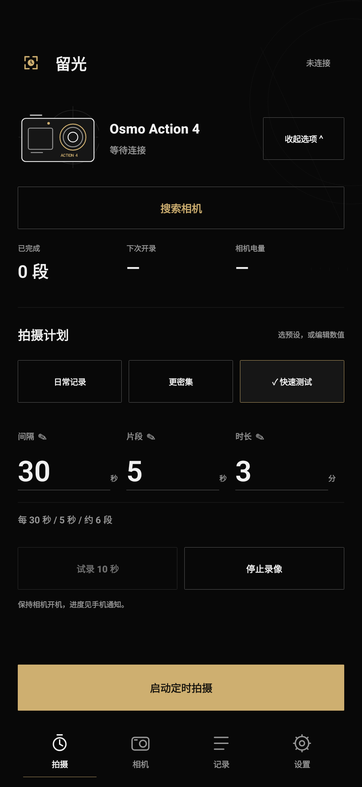

准备设备与环境
安卓手机、相机、数据线。开启 USB 调试，让 Agent 具备安装与读取日志的条件。
Everyday moments, captured on a schedule.
设好间隔与片段时长，让相机自动采集日常 Vlog。学习、做饭、创作，继续自己的生活。
DJI Osmo Action 4Android 13+本地连接


中文 / English · 深色 / 浅色
0.7.1 实际界面 · 无相机连接的 UI 渲染
A day, captured in moments
在手机上设好间隔与片段时长，点击启动，相机就会按计划自动录制，帮你留下日常 Vlog 片段。
Luma · native interface
中文、English 或跟随系统，支持浅色与深色模式。
拍摄页设定计划；相机页检查画面与参数；记录页查看任务进度；设置页调整语言、外观与后台运行。
查看全部界面与功能 ↗The workflow is the project
准备安卓手机与数据线，按已验证的技术路线搭建、安装和调试。完整手册保留页面规格、操作步骤与排错记录。
安卓手机、相机、数据线。开启 USB 调试，让 Agent 具备安装与读取日志的条件。
完整功能规格、18 张页面参考图、逐阶段 Prompt 和验收表。
R SDK 蓝牙控制、Wi-Fi/DUML 取景、原生前台服务与本地调度。
用 ADB 启动和操作手机，采集日志与截图，再运行逻辑和硬件回归。
完整规格 · 设备操作步骤 · 问题与修复 · 18 张界面参考
打开完整手册 ↗0.7.1 测试包适用于 Action 4。下载安装，授权附近设备与通知，然后扫描配对。
929 KiB · 无需 Root · 日常使用无需电脑
SHA-256
ea542f232ce9ade97ea5360ce5ab8cdb117b45992a73aa5681cdaeebc4d9b6a4
校验文件 · 第三方许可
自动唤醒尚未实现；观察与定时任务互斥，进程结束后不自动恢复任务。先完成短任务，再检查后台与目标使用时长。完整步骤见使用条件。
Quick answers
逐页功能与状态、技术栈、蓝牙和 Wi-Fi 链路、定时状态机、ADB 操作步骤、阶段 Prompt、19 项排错案例、验收表，以及 18 张明暗主题界面结构图。
开发时，电脑通过 USB 调试安卓手机。日常使用时，手机通过蓝牙控制相机，通过 Wi-Fi 读取实时画面和相册。
下载完整复现包，填写手机、相机与电脑信息，把完整简报和参考图交给 Agent。按「环境与 UI → 蓝牙与单次拍摄 → 调度 → Wi-Fi 辅助功能 → 外观与回归」完成。